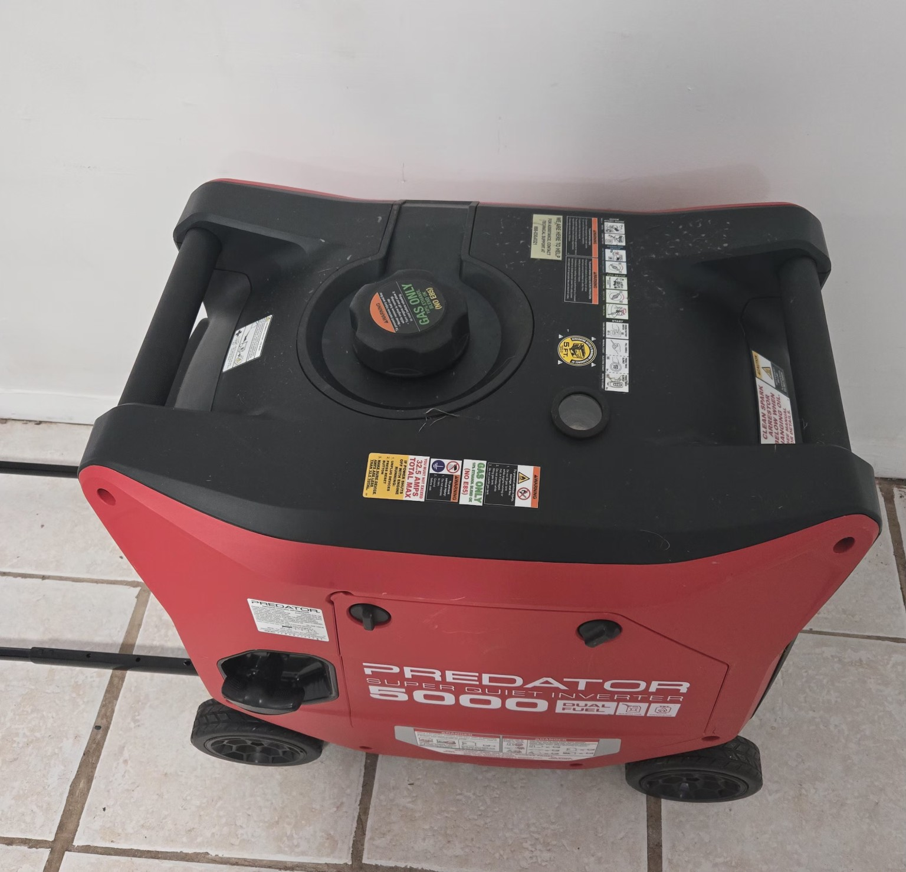
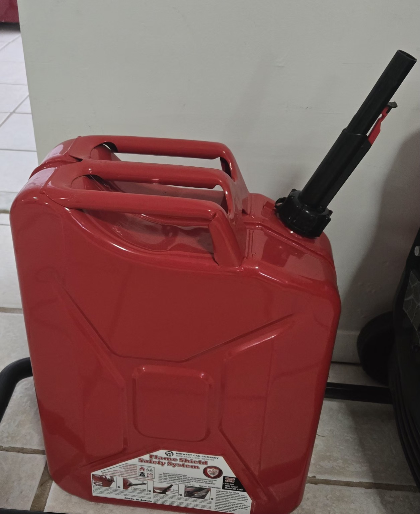
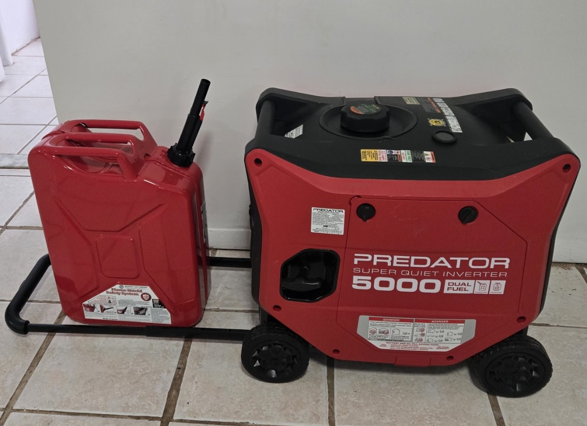

My Collection (2 items)
I am selling a small set of power equipment to help cover my tuition. This set is ideal for emergency backup, RV camping, and quiet power needs.
The main item is a Predator Super Quiet Inverter 5000 (dual fuel), paired with a sturdy gas can for safe fuel storage and transport.
Everything has been kept in good condition and stored indoors. If you want a reliable setup for storms, road trips, or outdoor projects, this is a great bundle.
Why this collection is special
- Quiet inverter-style power (great for neighborhoods and campgrounds)
- Dual-fuel flexibility (gasoline or propane)
- Portable and easy to move with built-in wheels
- Perfect for emergencies, RV trips, and home backup
Items for sale
- Predator Super Quiet Inverter 5000 (Dual Fuel) - $799 - View details
- Fuel Gas Can with Safety Spout - $35
Learn more about how generators work on Wikipedia: Generator (Wikipedia)
Photos




Quick FAQ (Bonus)
Is this good for emergencies?
Yes—this setup is great for outages, charging devices, and powering essentials (depending on wattage needs).
Why are you selling it?
To help pay tuition this semester.